La marque
Ce qui guide chaque choix visuel. Si un écran ne sert pas cette promesse, il n'est pas à sa place.
Vision
Donner à chaque élève le pouvoir de réussir.
Conviction
L'accompagnement scolaire sur-mesure est un droit, pas un privilège.
Pour qui
Les collégiens de la 6ᵉ à la 3ᵉ qui manquent d'accompagnement à la maison, et leurs parents.
Positionnement
Face aux révisions austères, Milo modernise l'apprentissage avec un accompagnement instantané, sur-mesure et gamifié, pour redonner à chaque élève le contrôle de sa réussite.
C'est le texte du manifeste de la landing. Il sert de référence pour tout pitch.Personnalité : l'enthousiasme
Milo est un renard, animal malin. Il parle comme un grand frère qui a de l'avance : il pose des questions plutôt que de donner les réponses.
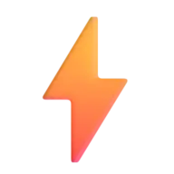
Vif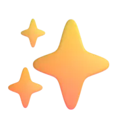
Moderne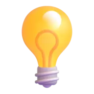
ImaginatifLe logo
Lettres crème en relief, contour orange épais, toque de diplômé verte posée sur le I. C'est un objet 3D : il garde toujours son volume et son ombre.
Zone de protection et tailles
Marge libre autour du logo égale à la hauteur de la toque, sur les quatre côtés.
Hauteur dans la navbar : 62 px, 52 px une fois la page défilée, 46 px sur mobile.
Taille minimale : 40 px de haut. En dessous, la toque devient illisible : utiliser l'icône renard.
Fichier : /landing/logo-milo-3d.webp (fond transparent).
À ne pas faire
Déformer. Toujours garder les proportions.
Fond vert ou sombre. Le vert reste un accent, jamais une surface.
Recolorer. Pas de version monochrome ni de filtre.
Incliner. Seul le survol peut l'animer, et il revient droit.
Les couleurs
Orange dominant, crème en secondaire, vert en accent ponctuel. L'orange vient du renard ; le crème donne de l'air et fait ressortir l'orange ; le vert rappelle la toque et le tableau d'école.
Nuances chaudes et dégradé feu
Dégradé feu à 135° : soleil du hero, formule Famille, carte finale, tablette des missions.
Répartition sur un écran
Contrastes (WCAG 2.2)
| Couple | Exemple | Ratio | Usage autorisé |
|---|---|---|---|
| Encre sur crème | Texte courant | 14,5:1 | AAA tout texte |
| Texte secondaire sur crème | Paragraphe | 5,9:1 | AA paragraphes, légendes |
| Braise sur blanc | Étiquette | 5,2:1 | AA petit texte orange |
| Braise sur crème | Étiquette | 4,4:1 | Grand texte dès 19 px gras |
| Crème sur vermillon | Manifeste | 3,4:1 | Grand texte titres display |
| Blanc sur orange Milo | Bouton | 3,2:1 | Grand texte boutons 18 px gras |
| Orange Milo sur crème | jeu d'enfant | 2,7:1 | Décoratif titres display ≥ 32 px, toujours avec le relief braise et à côté d'un mot en encre |
Deux polices
Une police de dessin animé pour crier, une police ronde pour parler. Les deux viennent de Google Fonts, chargées une seule fois dans index.html.
Luckiest Guy
ABCDEFGHIJKLM
abcdefghijklm
0123456789 € ! ?
Titres de section, prix, compteurs, manifeste, footer. Un seul poids. Les minuscules sont des petites capitales : écrire en casse normale.
Fredoka
Les révisions n'ont jamais été aussi amusantes. Chaque session devient une aventure ludique et interactive.
Paragraphes, boutons (700), étiquettes (600), légendes (500). Graisses 400 à 700.
Échelle typographique
Règles
Un ou deux mots d'un titre en orange avec le relief braise (.lp-hl), jamais tout le titre.
Titres équilibrés (text-wrap: balance), lignes de texte autour de 65 caractères.
Animer les titres lettre par lettre sans masque : un masque coupe les accents de Luckiest Guy.
Pas de Luckiest Guy pour un paragraphe, un bouton ou un champ.
Pas de titre en dégradé ni en texte détouré : le relief braise suffit.
Pas d'autre police. Pas de faux gras sur Luckiest Guy.
Tout est en relief
Chaque élément cliquable a une tranche : une ombre pleine décalée vers le bas, sans flou. Au survol il monte de 2 px, au clic il s'enfonce de 5 px.
Boutons
Étiquettes, puces et bulle
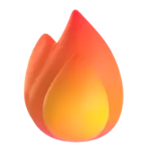
Série de 7 joursContinue comme ça !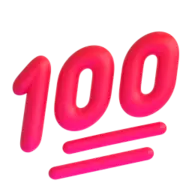
+50 XPQuiz parfait Salut, moi c'est Milo !Cartes
Planning intelligent
Une IA analyse son emploi du temps scolaire pour lui proposer des sessions calibrées.
- ✓Jusqu'à 4 enfants
- ✓Dashboard parent avancé
Une DA en 3D
La 3D est ce qui distingue Milo et rappelle l'univers des dessins animés. Personnage, objets et icônes : aucun pictogramme plat.
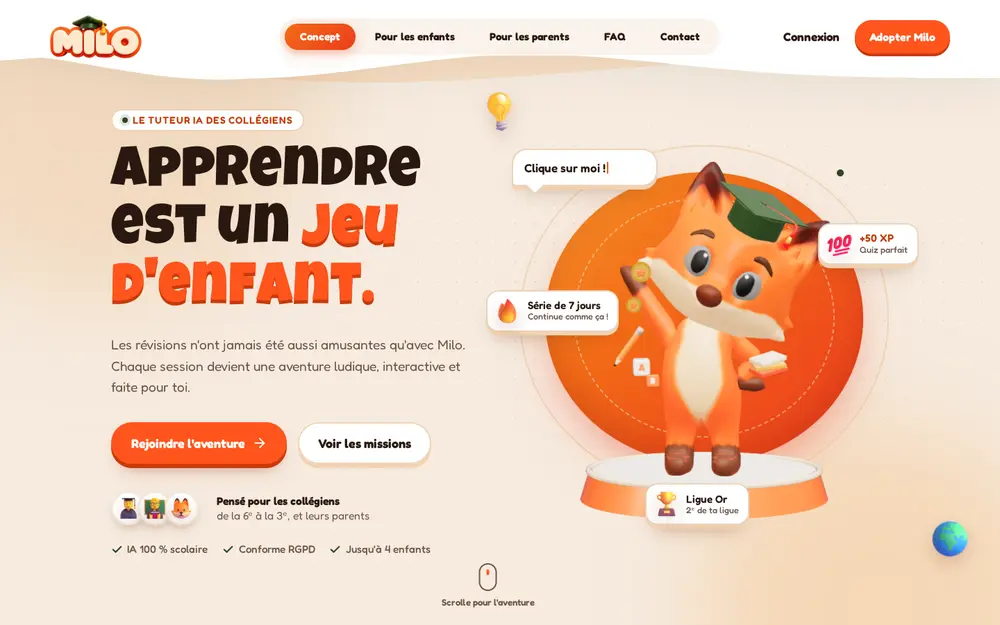
MiloV11.glb) avec la toque verte, sur son socle et son soleil feu.Règles 3D
- Milo porte la toque de diplômé teintée en vert tableau.
- Les objets ont un aspect jouet verni : matière brillante, couleurs de la palette uniquement.
- Éclairage chaud venant d'en haut à droite, ombre portée douce sous chaque objet.
- Milo et ses jouets réagissent à la souris ; un clic sur Milo joue une animation.
- Si la 3D ne charge pas, une image de Milo prend sa place.
Icônes 3D
Fluent Emoji 3D (Microsoft, licence MIT), en WebP 192 px, avec une ombre portée chaude. Une icône illustre une idée ; elle ne remplace jamais un mot.
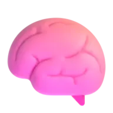
Exercices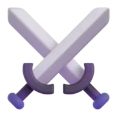
Duels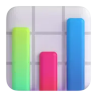
Progrès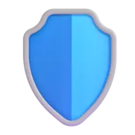
Sécurité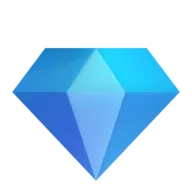
PremiumMise en page
Des sections généreuses, des formes rondes, des fonds qui alternent entre crème, blanc cassé et grands aplats feu.
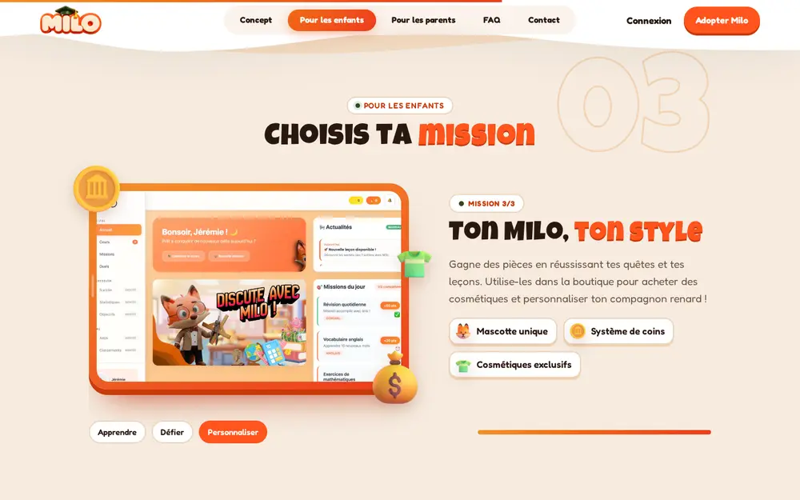
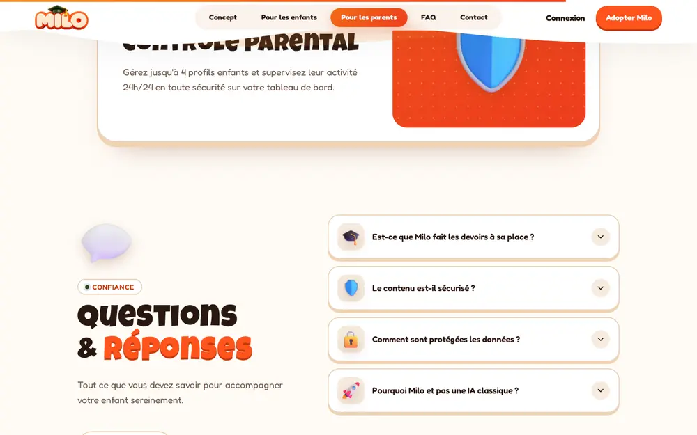
| Élément | Valeur | Note |
|---|---|---|
| Conteneur | 1200 px | Marges latérales clamp(16 px, 4vw, 40 px) |
| Espace entre sections | 80 à 140 px | clamp(80px, 11vw, 140px) |
| Rayons | 16 · 24 · 32 · 40 · 72 px | Étiquettes, questions, cartes, cartes empilées, haut de section ; 999 px pour pilules et boutons |
| Tranche 3D | 4 · 6 · 10 px | Ombre pleine sans flou, couleur plus sombre que l'élément |
| Texture | points 1,4 px / 28 px | Trame de points braise à 14 %, en fond du hero et des aplats feu |
| Transitions | vague SVG | Navbar et fin du manifeste : une vague plutôt qu'une ligne droite |
Le mouvement
Ça rebondit, comme un dessin animé. Le scroll raconte une histoire : Milo plonge dans son soleil, puis la page déroule l'aventure.
| Moment | Effet | Réglage |
|---|---|---|
| Arrivée | Titre lettre par lettre, puis textes, soleil, étiquettes | SplitText, back.out(1.7), décalage 22 ms |
| Portail | Le soleil remplit l'écran, Milo plonge, « En route pour l'aventure ! » | Hero épinglé sur 190 % de hauteur, scrub 1 |
| Manifeste | Les mots s'allument, les objets 3D arrivent des bords | Épinglé 140 %, scrub 0.7 |
| Missions | Balayage de l'écran, rotation 3D, compteur 01 → 03 | Épinglé, aimanté sur chaque mission |
| Parents | Les cartes s'empilent, celle du dessous rétrécit | position: sticky + scrub |
| Tarifs | Les cartes arrivent des côtés, les prix comptent | scrub 1, compteur 1,4 s |
| Fin | La carte s'étend jusqu'aux bords, Milo surgit | clip-path animé |
Toujours
- Un seul moteur par élément : GSAP pour le scroll, Framer Motion pour le menu.
- Défilement fluide avec Lenis, synchronisé à ScrollTrigger.
- Épinglage seulement au-dessus de 961 × 700 px.
Jamais
- D'animation quand l'utilisateur a demandé à réduire les mouvements.
- De texte qui reste invisible tant qu'on ne scrolle pas sur mobile.
- D'effet qui empêche de lire.
Deux voix, un ton
Enthousiaste et clair. On tutoie l'enfant, on vouvoie le parent.
Défie tes amis
Rien de tel qu'un peu de compétition pour progresser ! Participe à des duels en temps réel et grimpe tout en haut de la ligue.
- Tutoiement, phrases courtes, verbes d'action.
- Vocabulaire du jeu : mission, duel, ligue, quête, coins.
- Un point d'exclamation par paragraphe, pas plus.
L'allié des parents
Gardez un œil sur le classement de votre enfant dans sa ligue et visualisez ses points forts en un clin d'œil.
- Vouvoiement, ton rassurant et précis.
- Parler de sécurité, de suivi, de RGPD avec des faits.
- Jamais de promesse de résultats chiffrés.
Les tokens
Les couleurs de marque vivent dans shared/styles/brand.css ; la landing y ajoute ses nuances dans styles/landing.css. Aucune couleur en dur dans un composant.
/* shared/styles/brand.css (extrait) */ :root { --milo-orange: #FF541D; /* dominante */ --milo-braise: #C73A0C; /* relief, petit texte orange */ --milo-vert: #2B4520; /* accent ponctuel */ --milo-encre: #2A1810; /* texte */ --text-2: #6E5546; --f-display: "Luckiest Guy", "Fredoka", system-ui, sans-serif; --f-text: "Fredoka", "Nunito", system-ui, sans-serif; } /* features/landing/styles/landing.css */ .lp { --lp-creme: #F6EBDF; --lp-sable: #F1D2B2; --lp-mandarine: #F4922A; --lp-orange: #F36B16; --lp-brique: #EF4F1A; --lp-vermillon: #ED3C1D; --lp-milo: var(--milo-orange); --lp-foret: var(--milo-vert); --lp-braise: var(--milo-braise); --lp-ink: var(--milo-encre); --lp-feu: linear-gradient(135deg, var(--lp-mandarine) 0%, var(--lp-orange) 38%, var(--lp-brique) 70%, var(--lp-vermillon) 100%); }